A figura abaixo mostra um contador assíncrono crescente de módulo 8 (MOD-8), que conta de 0 à 7:
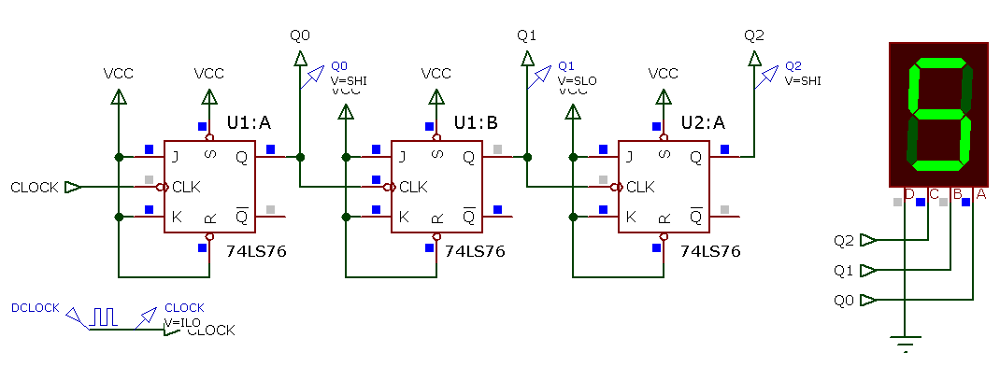
Video no Youtube:
Arquivo original: cont_assincrono_3_FFs-JK_1Hz.mp4
Note que neste tipo de circuito (de contador assíncrono), os seus FF's estão na configuração toggle (que alternam estado cada vez que recebem um pulso de clock).
Para entender o funcionamento deste circuito se faz necessário deduzir as formas de onda desenvolvidas nas saídas dos FF's.
Notar que os FF's estão numa estrutura "serial":
Deduzindo a forma de onda para Clock x Q0:
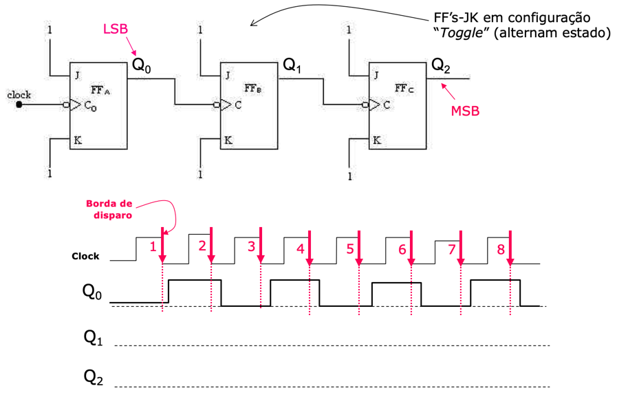
Podem ser considerados os atrasos de propagação dos FF's:
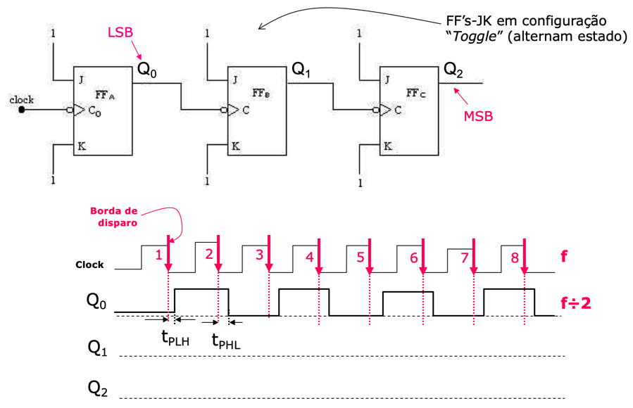
Note que as saídas do primeiro FF, saída Q0 está dividindo a frequência de entrada (do sinal de Clock) por 2.
Completando as formas de onda para a saída Q1 (note que FF-1 depende da saída de Q0 (FF anterior):
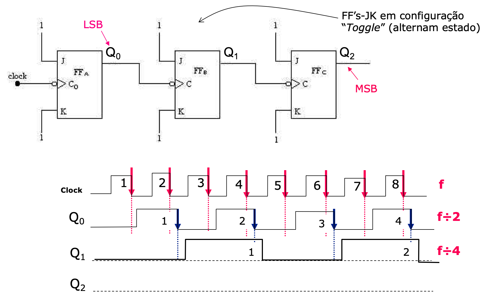
Completando as formas de onda para a saída Q1 (note que FF-1 depende da saída de Q0 (FF anterior):
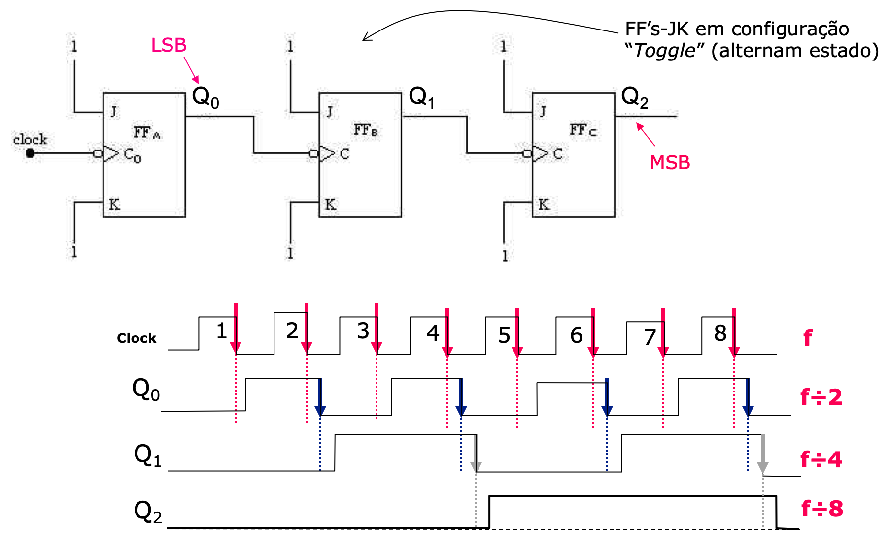
Podemos então confirmar que é realizada uma sequência de contagem crescente:
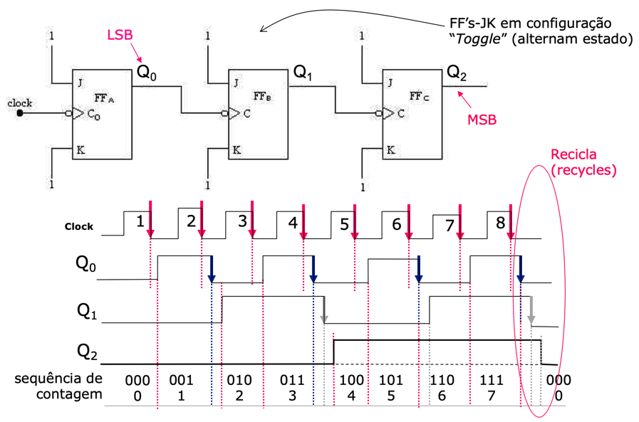
Note que ao final da contagem, o circuito naturalmente “recicla”, isto é, recomeça a contagem do 0 (zero) - enquanto o sinal de clock não for pausado.
Se os atrasos de propagação forem desprezados ou se o circuito foi simulado com uma baixa frequência para o sinal de Clock os atrasos não são perceptíveis:
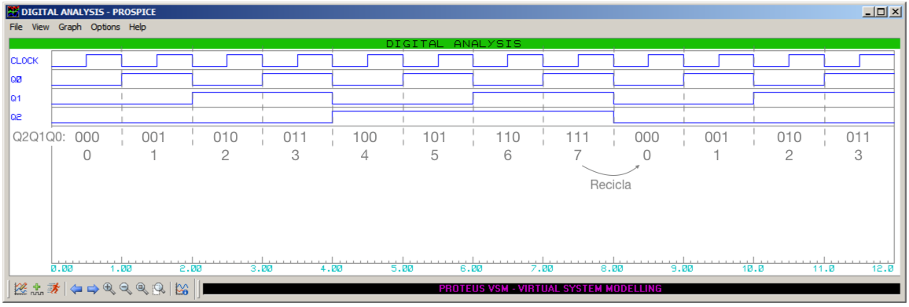
Podemos representar a contagem realizada na forma de uma tabela verdade para este contador (ou tabela de sequência de contagem):
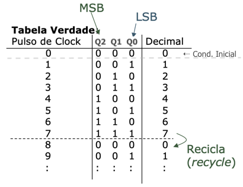
Obs.: O pulso de Clock 0 se refere ao instante inicial (quando o circuito é iniciado/energizado).
E também podemos representar o funcionamento deste contador na forma de um diagrama (de sequência) de estados:
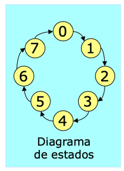
Desenhe as formas de onda para um circuito semelhante ao mostrado no início deste texto, mas em vez de usar FF's-JK ativados por borda de descida, use FF's por borda de subida.
Analisando em maiores detalhes como é realizada a contagem, percebemos que:
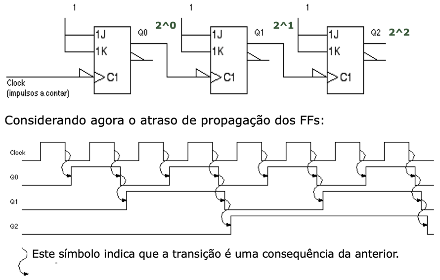
Se percebe que a contagem não segue uma sequência perfeita. Ocorrem "glitches":
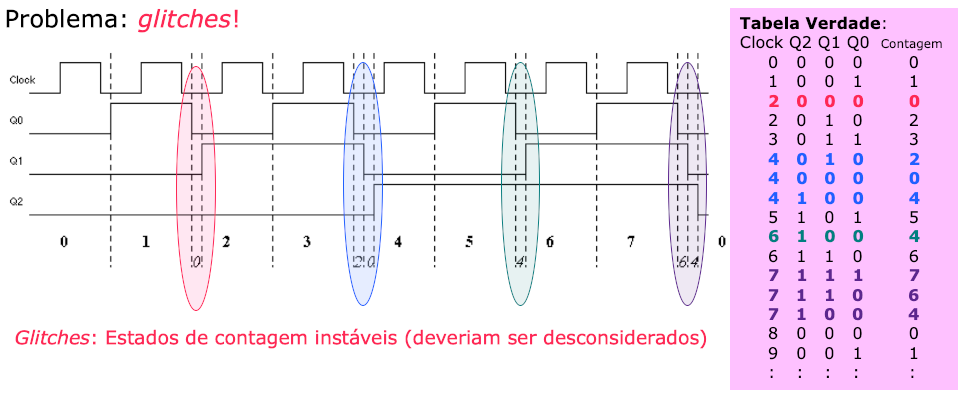
Repare na figura anterior, que algumas transições não são seguem a sequência numérica esperada, assumindo estados transitórios, que duram por um período de tempo equivalente ao atraso de propagação de um FF.
Uma consulta nas especificações do FF adotado: 74LS76 rende:
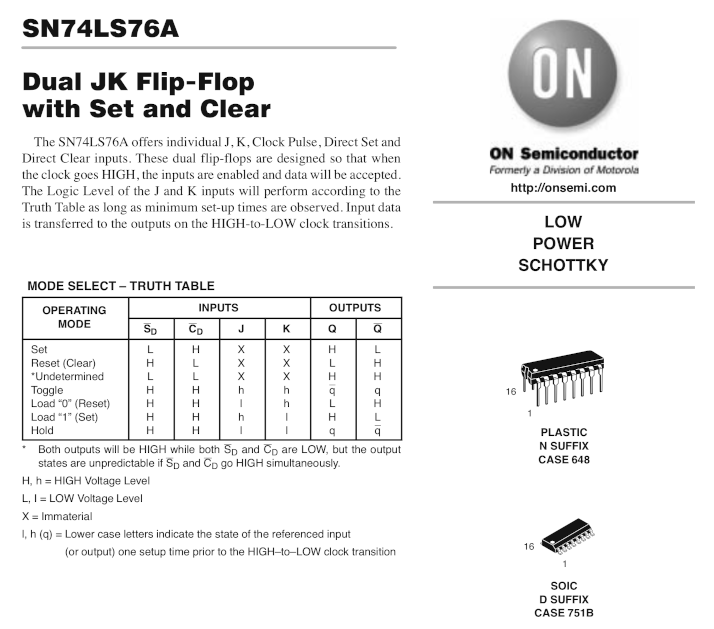
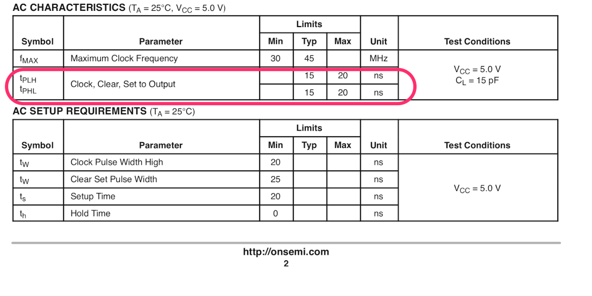
Num simulador, os atrasos de propagação podem se tornar perceptíveis se o período do sinal de clock for pouco maior que os atrasos de propagação presentes no circuito. Se o circuito anterior for simulador com:
\(f_{Clock}=10\) Mhz,
o período do sinal de Clock será de:
\(T=\dfrac{1}{f_{Clock}}=\dfrac{1}{10 \times 10^{6}}=\dfrac{1000}{10 \times 10^{9}}=100 \times 10^{-9}\) segundos ou \(T=100\) ns.
Isto implica que o atraso de propagação de um FF, em torno de \(t_{P}=20\) ns corresponde à \(=\frac{20}{100}\times100\%=0,2 \times 100\%=20\%\) de um ciclo do sinal de Clock.
De fato, uma simulação usando \(f_{Clock}=10\) MHz, envolvendo 12 pulsos de clock (período da simulação \(=12 \text{ pulsos de Clock } \times 100\)ns \(=1,2 \, \mu\)s) rende as seguintes formas de onda:
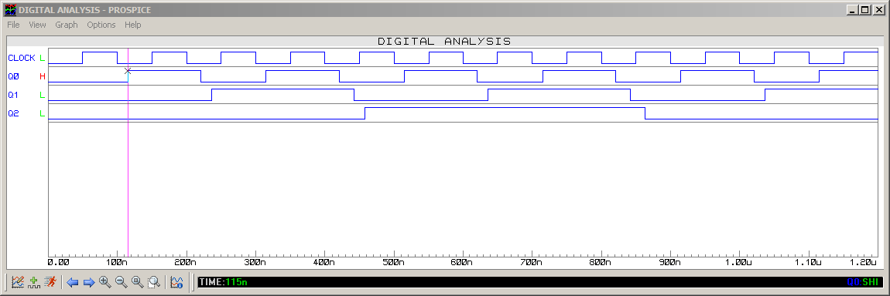
Nesta figura é até possível se perceber o \(t_{PLH}\) adotado por este simulador para os FF's 76LS76: \(t_{PLH}=15\)ns (notar cursor na posição TIME=115n=115 ns, então: \(t_{PLH}=115-100=15\) ns). Do modo semelhante pode ser inferido que este simular adota \(t_PHL=21\) ns para estas pastilhas.
Na última figura podem ser percebidos os "glitches". Cujo efeito fica mais ressaltado se tivermos que decodificar as saídas do contador para detectar a passagem por determinado estado (instante). de contagem, ver próximo circuito:
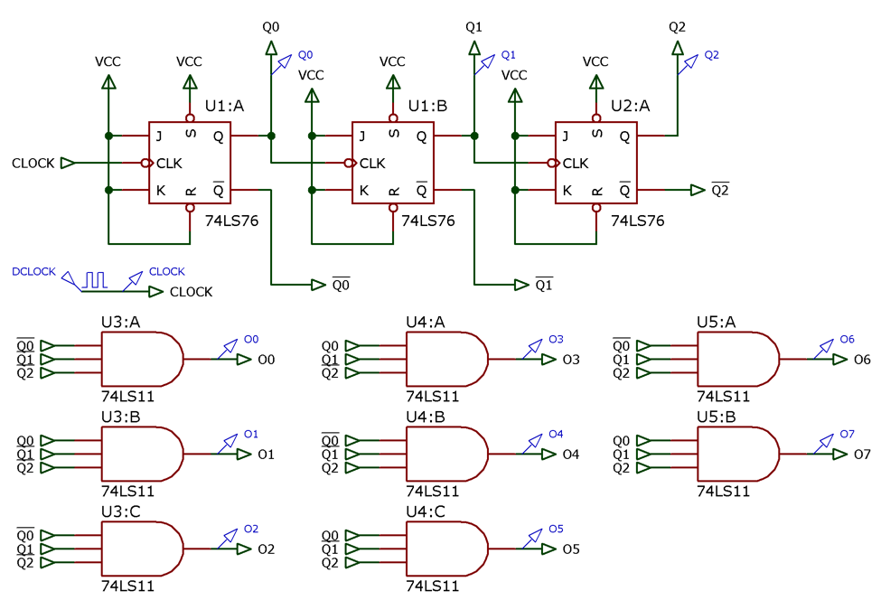
Notar que as saídas \(O_i\) correspondem às saídas decodificadas em ATIVO ALTO do contador síncrono MOD-8. Isto significa que a saída \(O_6\) só deveria comutar para nível lógico ALTO uma única vez durante todo o ciclo de contagem deste contador (total de 2^3=8 pulsos de clock), quando a saída do contador atingir o número 6 (\(Q_2Q_1Q_0=110_{(2)}\)). Mas...
Se este circuito for simulado com \(f_{Clock}=10\) MHz, perceberemos as seguintes formas de onda:
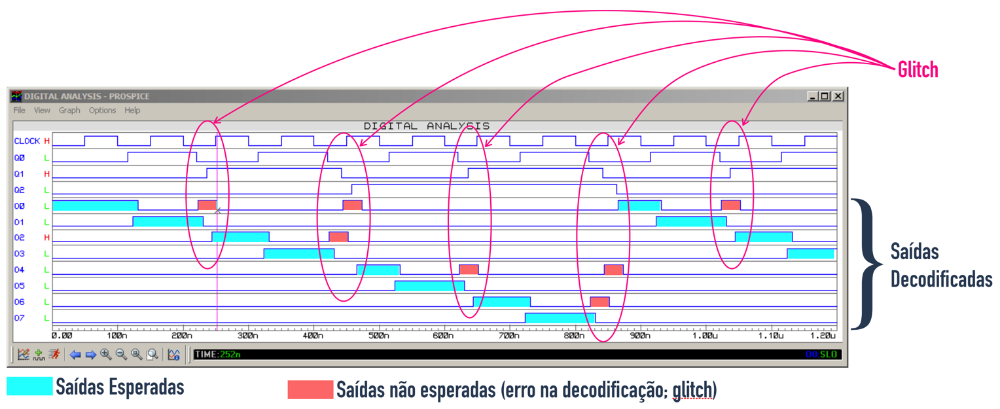
Este mesmo circuito simulado com \(f_{Clock}=1\) Hz, rende as formas de onda mostradas à seguir:
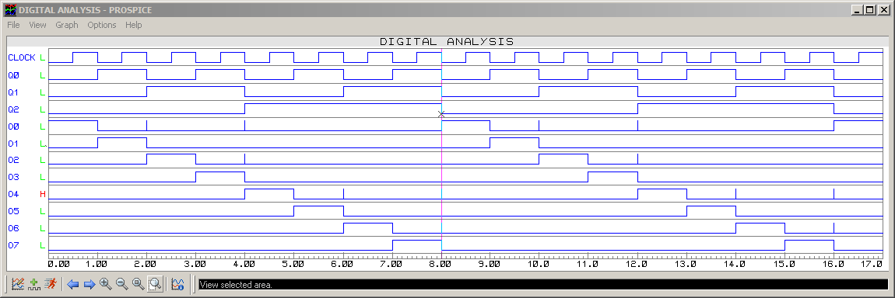
A saída decodificada se aproxima do que era desejado, porém note que os glithces continuam acontecendo (ressaltados pelos pequenos picos de sinais, "spikes").
Nota-se que os glitches comprometeram a decodificação das saídas deste contador.
A próxima figura, mostra o que era desejado:
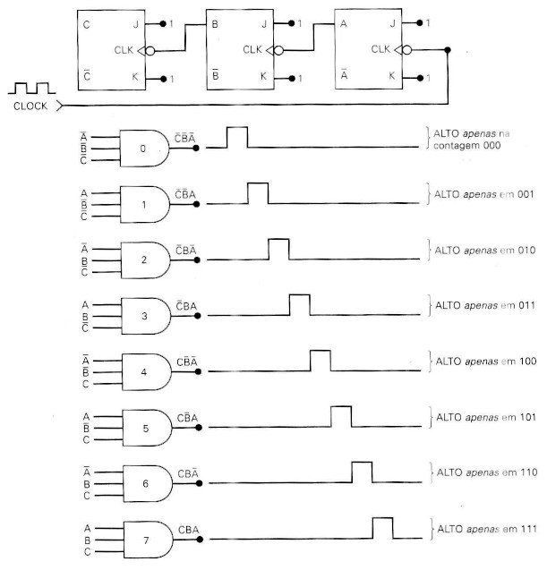
Com base nos diagramas de forma de onda mostrando os atrasos de propagação, se percebe que o que compromete o funcionamento de um contador síncrono é quando os atrasos acumulados incluindo seu penúltimo FF, coincide com a próxima borda ativa do sinal de Clock; neste ponto \(f_{Clock}=f_{Max}\).
Podemos reproduzir em formas de onda o que acontece quanto \(f_{Clock}=f_{Max}\), na pior situação, quando os 3 FF's são obrigados a mudar de estado, ou seja, a contagem passa de 7 para 0, ou ocorre a reciclagem; ver figura à seguir:
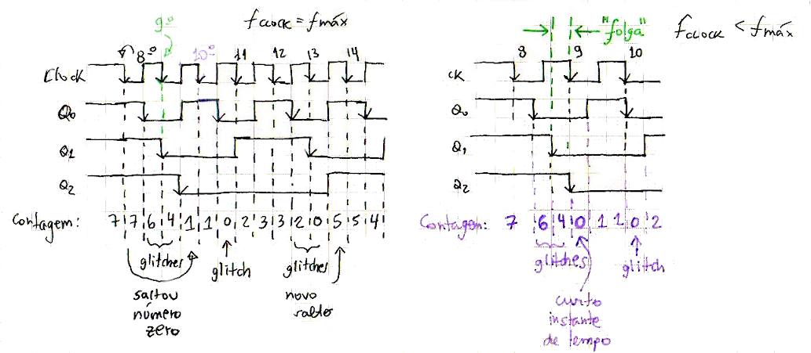
Note no lado esquerdo da figura anterior (\(f_{Clock}=f_{Max}\)) que não existe uma “folga” entre o atraso de comutação de Q1 e a próxima borda ativa do sinal de clock (pulso de clock de No. 8 para 9). Neste caso, note que o contador nem produz a saída \(Q_2Q_1Q_0=000_{(2)}\) (o número 0 foi “saltado”) como se o mesmo tivesse continuado a contagem diretamente para o número 1. Perceba nesta figura que o contador também salta a contagem do número 3 para o número 5 (sem exibir nas suas saídas o número 4).
Já a mesma figura, lado direito, mostra o que acontece mesmo em frequências altas mas ainda com \(f_{Clock}<f_{Max}\). Pode ser percebido que o instante em que a contagem passa por zero pode ser bastante curta, equivalendo ao período de tempo de um glitch deste contador.
Perceba que o atraso de propagação do último FF (\(Q_2\)) não interfere na contagem, apenas impacta num atraso na apresentação dos resultados da contagem. Desde que a frequência máxima não tenha sido atingida, o contador (assíncrono) continua apresentando nas suas saídas, a sequência esperada (apesar dos gliches).
A frequência máxima de operação depende então de \(n-1\) FF's presentes na estrutura do contador assíncrono, ou neste caso em particular:
\(f_{Max}=\dfrac{1}{2 \times t_P}=\dfrac{1}{2 \times 20 \times 10^9}=\dfrac{1000}{40 \times 10^{-6}}=25 \times 10^6\) Hz ou \(f_{Max}=25\) MHz.
As próximas figuras mostras as formas de onda no circuito do contador assíncrono crescente MOD-8 para 3, com saídas decodificadas, para diferentes condições de simulação:
a) \(f_{Clok}<f_{Max}\), (\(f_{Clock}=10\) Mhz):
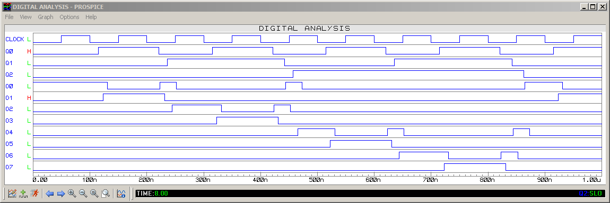
b) \(f_{Clock}=f_{Max}\), (\(f_{Clock}=25\) Mhz):
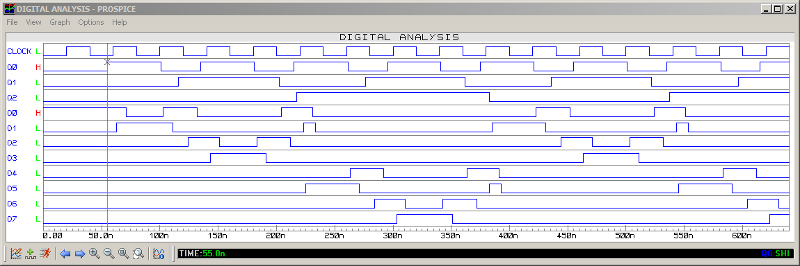
c) \(f_{Clock}>f_{Max}\), (\(f_{Clock}=40\) Mhz):
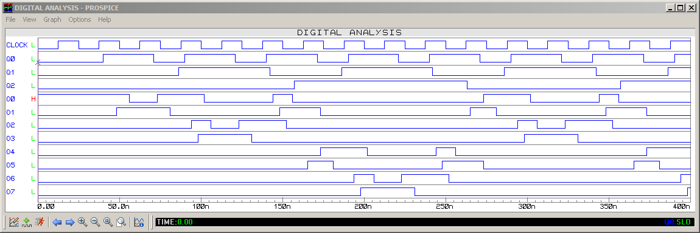
Perceba também que a frequência máxima de um circuito contador não está diretamente associado com a frequência máxima do FF adotado (que no caso é de \(f_{Max/\text{74LS75}}=30\) MHz no mínimo - ver especificações mostradas anteriormente).
Fim da Parte I >> Seguindo para Parte II
Circuitos Digitais II / Prof. Fernando Passold (atualizado em 27/03/2020).